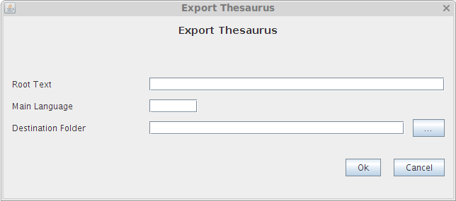

Export Thesaurus
Yopu should use the menu option "Thesaurus->Export" for exporting a complete Thesaurus.
This option exports the current thesarus creating in the filesystem a file in the standard format SKOS.
Before starting the export, OpenProdoc will show a form for defining diferent aspects of the process. The options to fill are:
- URI Text: It's the text that will be included in the SKOS file as reference of the thesarusu.
Ej.: If you write 'www.My_Institution.com' the fle will contain references as: '<skos:ConceptScheme rdf:about="http://www.My_Institution.com/20" >' or '<skos:Concept rdf:about="http://www.My_Institution.com/13bbf2478b9-3fe2d9c0c4896b3e" >' being 20 thje thesaurus number and 13bbf2478b9-3fe2d9c0c4896b3e the term identifier
- Main Language: The selected language will be used as default language for the export process. This means that the thesaurus will be scanned using the main language as a guide.
If the structure in every language is identical, the selected language dont affect to the result, but if there are diferences (i.e. the specific terms in a language are different form another) the relations and term to be included willbe different.
- Folder for saving the file: It's the folder in the filesystem where the current thesarus will be saved in SKOS format.

The Export process will create in the selected folder a file with the name "Thesaurus Number.rdf.xml". If there is an error, the system will communicate the reason for the error.
It should be noted that the SKOS format can be interpreted or suported in different ways(Implementations, Codification ), so the import and export process between systems different of OpenProdoc can be limited, losing part of the information.
Help Index Thesaurus